From a Rajasthan village to India’s highways — the making of Hindustani Musafir.
Farmer’s son. Endurance cyclist. Mountaineer-in-training. Environmentalist. Founder, OxyHunger Foundation. This is the story behind the 60,000 km Safar.
An ordinary upbringing, an extraordinary resolve.
Pappu Ram Choudhary was born and raised in Khimsar, a small village in Rajasthan’s Nagaur district, in a traditional farming household where long days in the fields and simple living shaped his early discipline. Like many young men from rural Rajasthan, his path could easily have stayed close to home — but a growing concern for the environment and India’s youth pulled him toward a very different kind of field: the open road.
On 25 April 2023, he set out from Rajasthan on a solo, self-supported bicycle journey carrying his own gear, camera and survival supplies, with a single, audacious target: 60,000+ kilometres, touching every state and union territory in India. In the years since, that decision has carried him through the deserts of Rajasthan, the highways of Punjab and Haryana, the coastlines of Odisha and the south, the high passes of Jammu & Kashmir, Ladakh and Khardung La — and, most recently, deep into the Northeast: Assam, Meghalaya, Arunachal Pradesh, Nagaland, Manipur, Mizoram, Tripura and Sikkim — covering more than 41,000 km across 24 states and 8 union territories to date.
As a Rotarian, he rides in partnership with Rotary clubs along his route, and has been welcomed and supported by the Indian Army, Assam Rifles, the CRPF, and state administrations — including a special invitation from the Governor of Nagaland to join a tree-plantation activity in Kohima. Along the way he has become a mountaineer-in-training too, summiting regional high points including Mount Iso (Manipur’s highest peak) and Betlingchhip (Tripura’s highest peak), while preparing for his most demanding chapter: Mission Everest 2027.
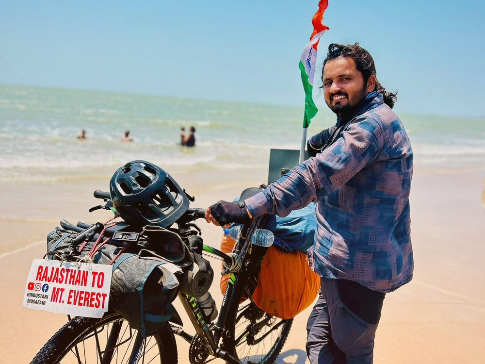
On the coastal route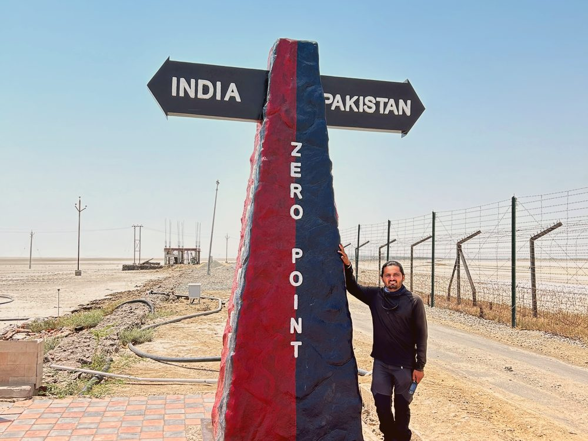
India border, zero pointCore values
Every school visit, plantation drive and mountain training session traces back to three commitments.
Environmental Conservation
A personal pledge to plant 1,00,000 indigenous trees — Neem, Peepal and Banyan — restoring oxygen-generating green cover along India’s highways.
Drug-Free Youth
Direct conversations with students and young people at every stop, using his own journey as proof that discipline beats dependency.
Physical Fitness
60,000+ km in the saddle and a growing mountaineering routine — a living case study in what consistent, disciplined training can achieve.
Why “Hindustani Musafir” and “Oxygen Man of India”?
The Indian Traveller
The name captures exactly what he is: a traveller of the nation, moving continuously from state to state with no fixed home for the length of the Safar. Local press across every region he passes through — from Jammu to Kohima to Dimapur — have adopted the title as shorthand for a cyclist who belongs, for now, to the road itself.
The tree-planting pledge
Given in recognition of his pledge to plant 1,00,000 saplings — already over 32,500 trees in the ground through the OxyHunger Foundation — the nickname reflects a simple idea: every tree he plants is a small, permanent oxygen source for the country he is cycling across.
Welcomed along the way
From district administrations to the armed forces, the Safar has drawn support from institutions across every region it passes through.
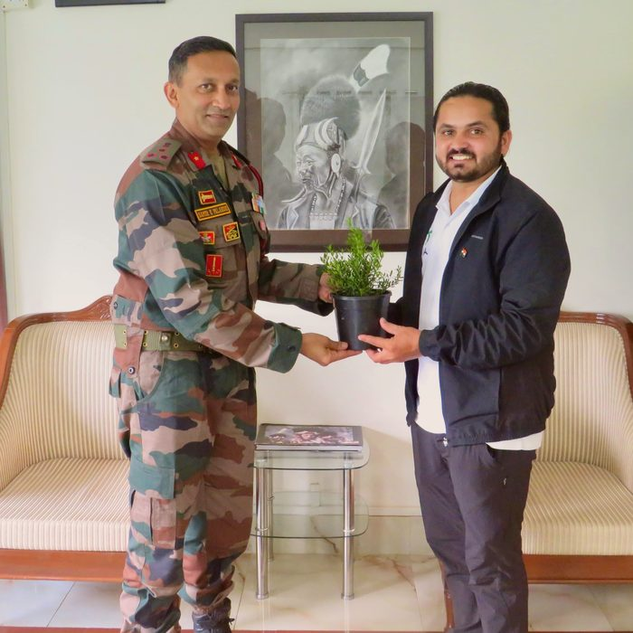
Indian Army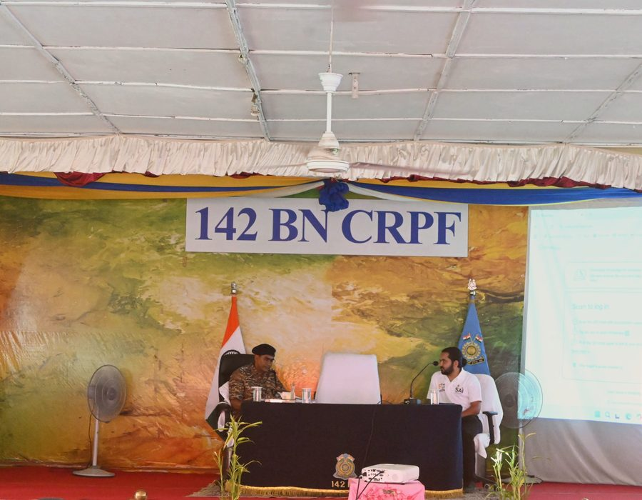
CRPF, Dimapur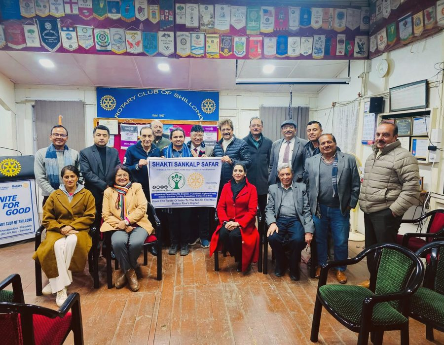
Assam Rifles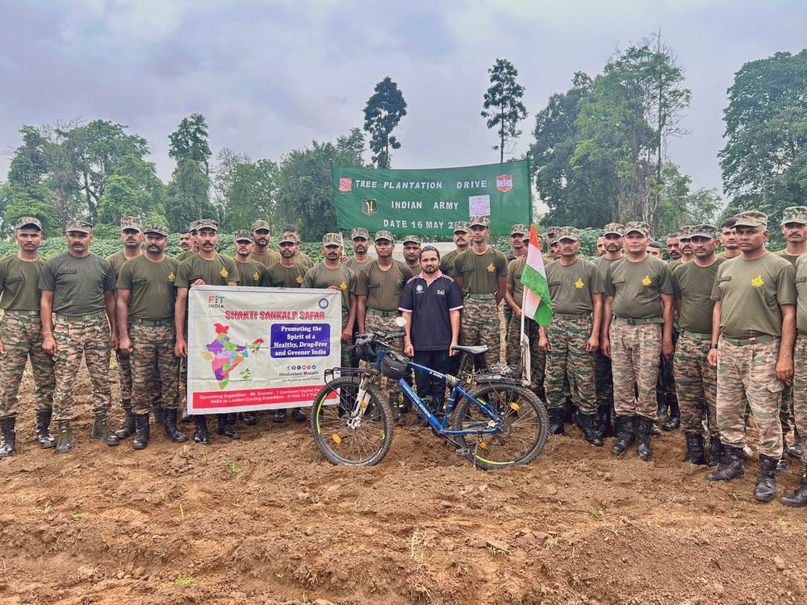
Joint plantation driveTraining & the journey so far
A growing archive of moments from the road.
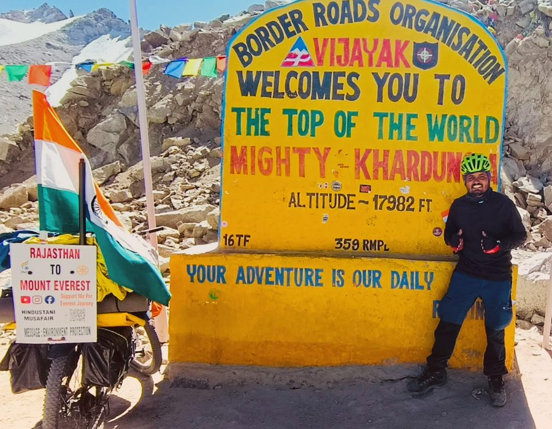
Khardung La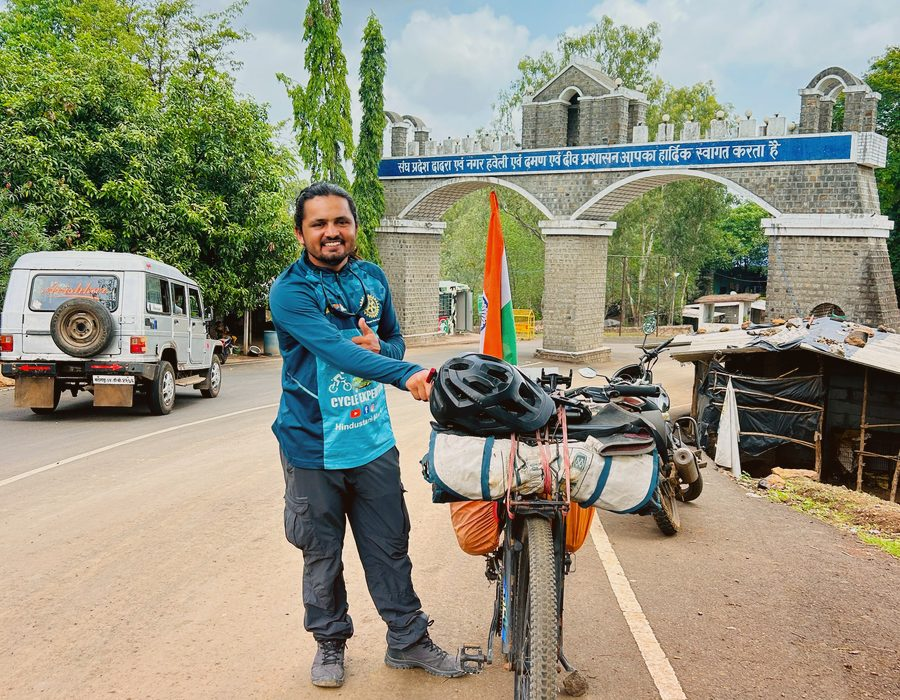
National highway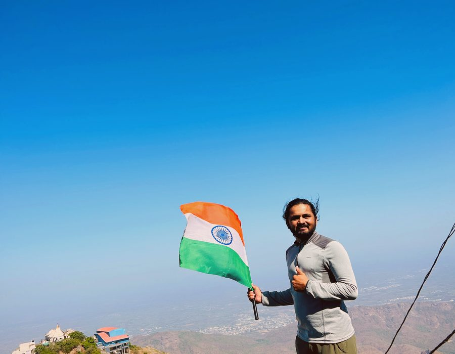
Coastal cliffs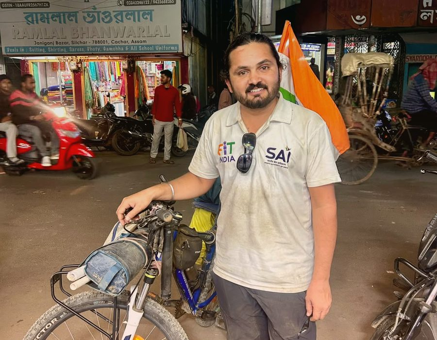
Town stopover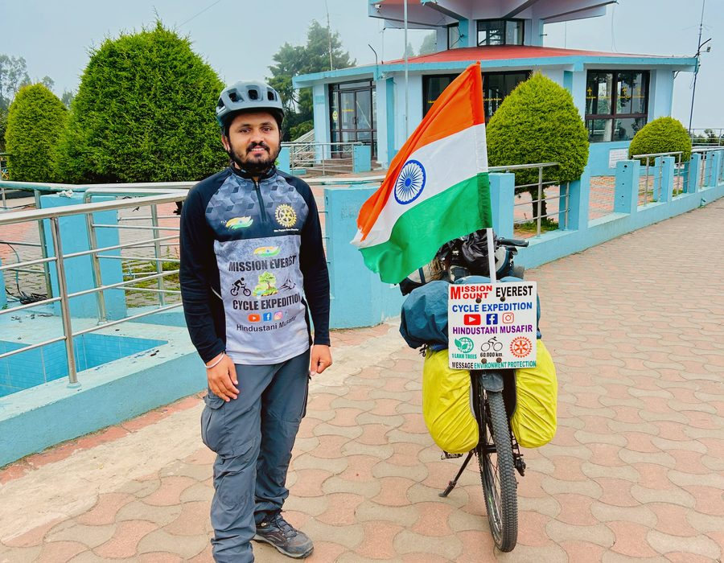
Coastal route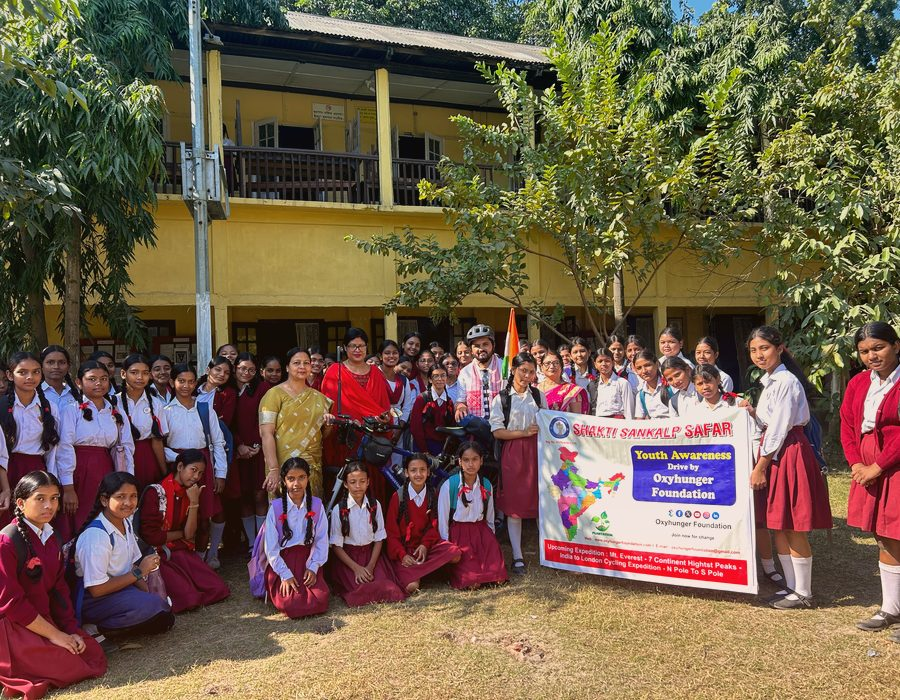
Mountain roads